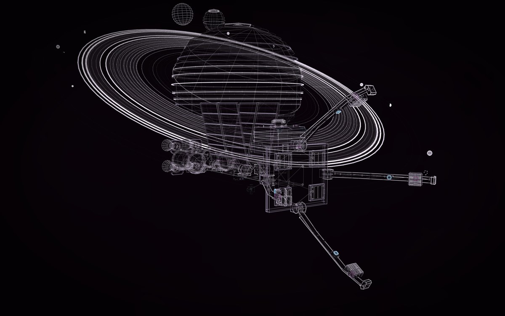

2 constructs, placed 2 times. Drag to turn it; the buttons are its views; P shows how each part is known, S shows it as a solid in its own colours.
Placed from the gallery: KESTREL, more detailed, Saturn.
KESTREL, an invented ring-ice pusher, at work by Saturn's rings, the planet huge behind it at its real size from about 350,000 km. Each construct keeps its own parts, sources and joints.

2 constructs, placed 2 times. Drag to turn it; the buttons are its views; P shows how each part is known, S shows it as a solid in its own colours.
Placed from the gallery: KESTREL, more detailed, Saturn.